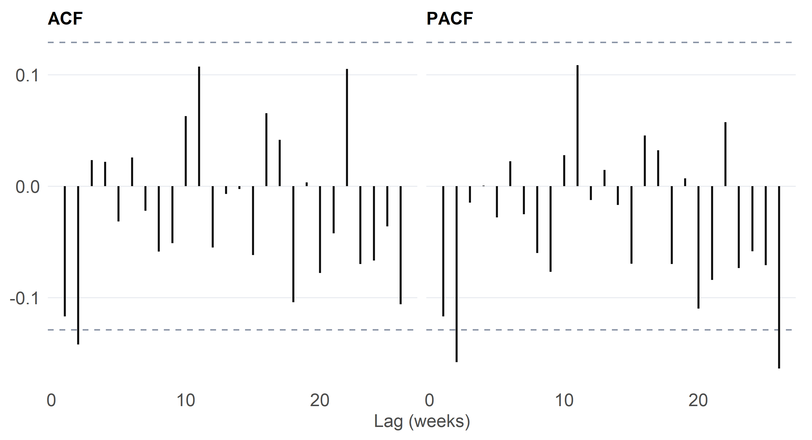
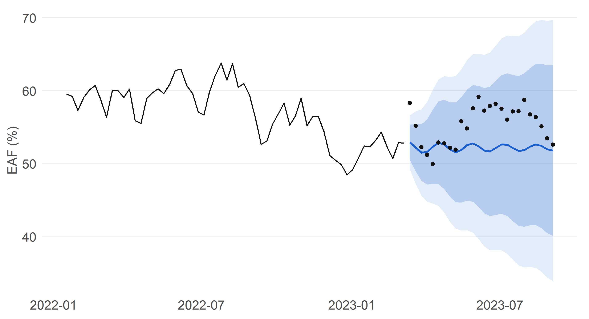
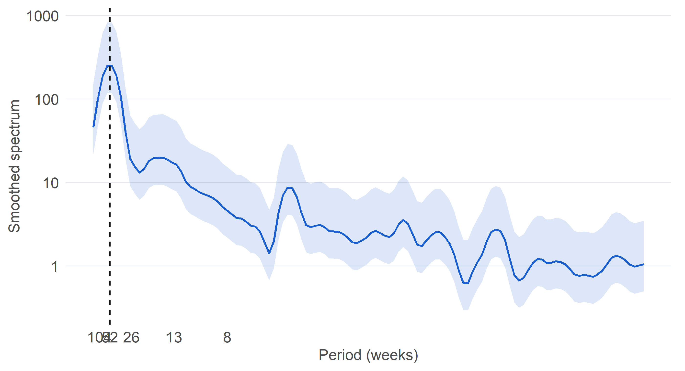

Worked tutorials, an implementation from first principles, and one idea beyond the notes
Overview
This section covers the classical toolkit: ARIMA models, ARCH and GARCH models for changing variance, and spectral analysis. They all describe the same thing, the autocovariance structure of a series. ARIMA summarises it with a few parameters, GARCH models the variance that is left over, and the spectrum shows the same information by cycle length.
I applied these ideas mainly in Project 1 (a GARCH model with a search-interest regressor) and Project 2 (cross-spectral coherence). The tutorials here add three things: ARIMA forecasting and the periodogram on Eskom’s EAF, a Whittle estimator that I coded myself and tested against maximum likelihood, and a look at long memory with the GPH estimator.
All tutorials use the weekly Eskom Energy Availability Factor (EAF) built for Project 2, which has 232 weeks from Apr 2019 to Sept 2023.
Tutorial 1.1: ARIMA forecasting of Eskom EAF
Aim. Fit an ARIMA model to weekly EAF by the Box-Jenkins steps, forecast 26 weeks ahead with prediction intervals, and judge the forecasts on a hold-out.
Table 1: Unit-root and stationarity tests. ADF null: unit root. KPSS null: stationary around a trend (level) or constant (change).
Series
ADF p
KPSS p
EAF level
0.044
0.1
Weekly change in EAF
0.010
0.1
Code
# ACF and PACF in one data frame (lag 0 dropped from the ACF)cf_df <-function(z, lag.max =26) { a <-acf(z, lag.max = lag.max, plot =FALSE); p <-pacf(z, lag.max = lag.max, plot =FALSE)bind_rows(tibble(type ="ACF", lag =as.numeric(a$lag)[-1], r =as.numeric(a$acf)[-1]),tibble(type ="PACF", lag =as.numeric(p$lag), r =as.numeric(p$acf)))}cf_df(dy) |>ggplot(aes(lag, r)) +geom_hline(yintercept =c(-1, 1) *1.96/sqrt(length(dy)), linetype ="dashed", colour = pal[["grey"]]) +geom_segment(aes(xend = lag, yend =0), colour = pal[["ink"]], linewidth =0.6) +facet_wrap(~type) +labs(x ="Lag (weeks)", y =NULL)

Figure 1: Autocorrelation and partial autocorrelation of the weekly change in EAF. Dashed lines are approximate 95% bounds.
The level is non-stationary and the weekly change is stationary, so I difference once (d=1). I hold out the last 26 weeks, choose (p,q) on the training data by AIC over a small grid, and check the residuals.
Code
hold <-26train <- y[1:(n - hold)]; test <- y[(n - hold +1):n] # training set and 26-week hold-outgrid <-expand.grid(p =0:3, q =0:3) # candidate orders, d = 1 throughoutcand <-pmap_dfr(grid, function(p, q) { f <-tryCatch(arima(train, order =c(p, 1, q)), error =function(e) NULL)if (is.null(f)) return(NULL)tibble(p = p, q = q, AIC =AIC(f), BIC =BIC(f))}) |>arrange(AIC)best <- cand[1, ]fit <-arima(train, order =c(best$p, 1, best$q))lb <-Box.test(residuals(fit), lag =13, type ="Ljung-Box", fitdf = best$p + best$q)$p.value
Code
cand |>head(5) |>kable(digits =1)
Table 2: The five best ARIMA(p,1,q) models on the training data.
p
q
AIC
BIC
2
2
854.8
871.4
2
3
855.6
875.6
2
0
857.1
867.0
0
2
857.9
867.9
3
0
859.1
872.3
The selected model is ARIMA(2,1,2), and the Ljung-Box test on its residuals gives p = 0.300, so there is no evidence of leftover autocorrelation.
Code
pr <-predict(fit, n.ahead = hold)fc <-tibble(date = eaf$date[(n - hold +1):n], fit_mean =as.numeric(pr$pred), se =as.numeric(pr$se),l80 = fit_mean -qnorm(0.90) * se, u80 = fit_mean +qnorm(0.90) * se,l95 = fit_mean -qnorm(0.975) * se, u95 = fit_mean +qnorm(0.975) * se, actual = test)ggplot() +geom_line(data =tibble(date = eaf$date[1:(n - hold)], v = train) |>tail(60), aes(date, v), colour = pal[["ink"]]) +geom_ribbon(data = fc, aes(date, ymin = l95, ymax = u95), fill = pal[["blue"]], alpha =0.12) +geom_ribbon(data = fc, aes(date, ymin = l80, ymax = u80), fill = pal[["blue"]], alpha =0.22) +geom_line(data = fc, aes(date, fit_mean), colour = pal[["blue"]], linewidth =0.8) +geom_point(data = fc, aes(date, actual), colour = pal[["ink"]], size =1.2) +labs(x =NULL, y ="EAF (%)")rmse_arima <-sqrt(mean((test - fc$fit_mean)^2))rmse_naive <-sqrt(mean((test -tail(train, 1))^2)) # naive: repeat the last observationcov80 <-mean(test >= fc$l80 & test <= fc$u80); cov95 <-mean(test >= fc$l95 & test <= fc$u95)

Figure 2: 26-week hold-out forecast of EAF with 80% and 95% prediction intervals. Points are the actual values.
On the 26-week hold-out the ARIMA forecast has an RMSE of 4.02 against 3.59 for the naive forecast (repeat the last value). The 80% and 95% intervals contain 96% and 96% of the actual values. The model does not beat the naive benchmark, which is a useful warning about how little weekly structure there is.
Limitations. This is a non-seasonal model, but EAF has an annual cycle (planned outages are lower in winter). A seasonal ARIMA with period 52 needs far more than 232 weekly observations, so Section 2 handles seasonality with harmonic regression instead. Prediction intervals assume Gaussian, constant-variance errors, which weekly EAF may not satisfy.
Tutorial 1.2: The periodogram of EAF
Aim. Look at EAF in the frequency domain and test whether the annual cycle shows up.
Code
xd <-resid(lm(y ~seq_along(y))) # remove the linear trendsp <-spec.pgram(xd, spans =c(3, 5), taper =0.1, detrend =FALSE, demean =TRUE, plot =FALSE)spec_df <-tibble(freq = sp$freq, spec = sp$spec,lo = sp$spec * sp$df /qchisq(0.975, sp$df), # 95% limits from the chi-square distributionhi = sp$spec * sp$df /qchisq(0.025, sp$df))ggplot(spec_df, aes(freq)) +geom_ribbon(aes(ymin = lo, ymax = hi), fill = pal[["blue"]], alpha =0.15) +geom_line(aes(y = spec), colour = pal[["blue"]], linewidth =0.7) +geom_vline(xintercept =1/52.18, linetype ="dashed", colour = pal[["ink"]]) +scale_y_log10() +scale_x_continuous(breaks =1/c(104, 52, 26, 13, 8), labels =c("104", "52", "26", "13", "8"), name ="Period (weeks)") +labs(y ="Smoothed spectrum")f_pk <- sp$freq[which.max(sp$spec)]band <- sp$freq >=1/60& sp$freq <=1/45# periods of 45 to 60 weeksshare <-sum(sp$spec[band]) /sum(sp$spec)# Cross-check: regress on one annual harmonic and test ittt <-seq_along(y); w <-2* pi /52.18h1 <-lm(xd ~sin(w * tt) +cos(w * tt))r2 <-summary(h1)$r.squared; p_h <-anova(lm(xd ~1), h1)$`Pr(>F)`[2]amp <-sqrt(sum(coef(h1)[2:3]^2))

Figure 3: Smoothed periodogram of linearly detrended EAF with 95% confidence limits. The dashed line marks the annual period of 52 weeks.
The strongest peak is at a period of about 48 weeks, and the 45 to 60 week band holds 30% of the smoothed spectrum. As a cross-check, a single annual harmonic explains 61% of the detrended variation (amplitude 4.0 percentage points, p = <0.001). The annual cycle is statistically clear.
Limitations. With 232 weeks the frequency resolution is about 0.004 cycles per week, so periods near a year are barely separated from neighbouring cycles. The smoothing that makes the plot readable also widens the peak, and the linear detrending is a choice.
Implementation 1.3: Whittle estimation from first principles
Aim. Estimate an ARMA(1,1) model without a time-domain likelihood, using only the periodogram, and compare with Gaussian maximum likelihood.
For a series with periodogram I(\lambda_j) at Fourier frequencies, the Whittle likelihood replaces the exact Gaussian likelihood by
Profiling out \sigma^2 gives \hat\sigma^2=\text{mean}\,(I/g), and the objective left to minimise over (\phi,\theta) is \log\hat\sigma^2+\text{mean}\,\log g. I keep the model stationary and invertible with a \tanh reparametrisation.
# Whittle estimates (phi, theta, sigma2) for an ARMA(1,1) from the periodogramwhittle_arma11 <-function(x) { n <-length(x); x <- x -mean(x) j <-1:floor((n -1) /2); lam <-2* pi * j / n # Fourier frequencies in (0, pi) I <- (Mod(fft(x))[j +1])^2/ n # periodogram e <-exp(-1i * lam) shape <-function(ph, th) Mod(1+ th * e)^2/Mod(1- ph * e)^2# spectral shape g obj <-function(p) { # profiled Whittle objective g <-shape(tanh(p[1]), tanh(p[2]))log(mean(I / g)) +mean(log(g)) } o <-optim(c(0, 0), obj, method ="BFGS") ph <-tanh(o$par[1]); th <-tanh(o$par[2])c(phi = ph, theta = th, sigma2 =mean(I /shape(ph, th)))}
Table 3: ARMA(1,1) fitted to the weekly change in EAF by Whittle and by Gaussian maximum likelihood.
Method
phi
theta
sigma2
Whittle
0.512
-0.670
3.792
Gaussian MLE
0.489
-0.649
3.787
The two methods give similar estimates on the real series. A single series cannot show which method is better, so I simulate from a known ARMA(1,1).
Code
R <-200; truth <-c(phi =0.7, theta =0.5)sim <-map_dfr(1:R, function(r) { z <-arima.sim(list(ar = truth[["phi"]], ma = truth[["theta"]]), n =231) # true ARMA(1,1) w <-whittle_arma11(z) f <-tryCatch(arima(z, order =c(1, 0, 1)), error =function(e) NULL) mle <-if (is.null(f)) c(NA_real_, NA_real_) elseunname(coef(f)[c("ar1", "ma1")])tibble(method =c("Whittle", "Gaussian MLE"), phi =c(w[["phi"]], mle[1]), theta =c(w[["theta"]], mle[2]))})sim |>group_by(method) |>summarise(`Mean phi`=mean(phi, na.rm =TRUE), `SD phi`=sd(phi, na.rm =TRUE),`Mean theta`=mean(theta, na.rm =TRUE), `SD theta`=sd(theta, na.rm =TRUE), .groups ="drop") |>kable(digits =3)
Table 4: 200 simulated ARMA(1,1) series of length 231 with phi = 0.7 and theta = 0.5: mean and spread of each estimator.
method
Mean phi
SD phi
Mean theta
SD theta
Gaussian MLE
0.689
0.056
0.504
0.065
Whittle
0.695
0.056
0.484
0.068
Both estimators recover φ well (means 0.695 and 0.689 against a true 0.7) with identical spread (SD 0.056). For θ, Whittle is slightly biased downwards (0.484 against a true 0.5, where MLE gives 0.504) and slightly more variable (SD 0.068 against 0.065). Whittle’s cost is therefore a small finite-sample bias in θ, and its benefit is that it needs only one FFT and a two-parameter search.
Limitations. The Whittle likelihood is an approximation that improves with sample size, and it treats the periodogram ordinates as independent. It is also awkward when the spectrum has sharp features, because the periodogram is a noisy estimate.
Beyond the notes 1.4: Long memory and the GPH estimator
Idea. Differencing assumes a series is either stationary or has a unit root. A fractionally integrated series sits in between, with autocorrelations that decay slowly, and it is common in volatility. The Geweke and Porter-Hudak (GPH) estimator reads the memory parameter d from the slope of the log-periodogram against \log\{4\sin^2(\lambda_j/2)\} at the lowest frequencies. A value of 0 means short memory, values between 0 and 0.5 mean stationary long memory, and 1 corresponds to a unit root.
# GPH estimate of d from the lowest m Fourier frequencies, with its asymptotic standard errorgph <-function(x, m) { n <-length(x); x <- x -mean(x); j <-1:m; lam <-2* pi * j / n I <- (Mod(fft(x))[j +1])^2/ n # periodogram reg <-log(4*sin(lam /2)^2) # regressor fit <-lm(log(I) ~ reg)c(d =-coef(fit)[["reg"]], se =sqrt(pi^2/6/sum((reg -mean(reg))^2)))}# Weekly absolute returns of Capitec, from Project 4's price file (simple version, no glitch screen)prices <-read_csv("../projects/project-04/data/prices.csv", show_col_types =FALSE) |>mutate(date =as.Date(date))cap <- prices |>filter(series =="capitec") |>arrange(date) |>mutate(wk =floor_date(date, "week", week_start =1)) |>group_by(wk) |>summarise(adj = dplyr::last(adj), .groups ="drop") |>mutate(r =100*c(NA, diff(log(adj)))) |>drop_na() |>filter(wk >=as.Date("2015-01-05"), wk <=as.Date("2026-10-19"))series <-list(`EAF level`= y, `Weekly change in EAF`= dy, `Capitec absolute weekly return`=abs(cap$r))
Code
map_dfr(names(series), function(nm) { z <- series[[nm]]; n <-length(z) a <-gph(z, floor(n^0.5)); b <-gph(z, floor(n^0.65))tibble(Series = nm, n = n, `d (m = n^0.5)`= a[["d"]], `se 1`= a[["se"]], `d (m = n^0.65)`= b[["d"]], `se 2`= b[["se"]])}) |>kable(digits =2)
Table 5: GPH estimates of the memory parameter d at two bandwidths (m = n^0.5 and n^0.65), with asymptotic standard errors.
Series
n
d (m = n^0.5)
se 1
d (m = n^0.65)
se 2
EAF level
232
0.99
0.22
0.89
0.13
Weekly change in EAF
231
-0.51
0.22
-0.28
0.13
Capitec absolute weekly return
616
0.08
0.16
0.22
0.09
The EAF level has d close to 1 (0.99 and 0.89), consistent with a unit root and with the decision to difference. The weekly change is not near 0: d is −0.51 at m = n^0.5 and −0.28 at m = n^0.65, both more than two standard errors below zero. This suggests the differenced series is over-differenced or anti-persistent, not that it has long memory. Capitec’s absolute return falls between 0 and 0.5 at both bandwidths (0.08 and 0.22), but only the wider bandwidth distinguishes it from 0 (0.22 with se 0.09), so the evidence for volatility persistence depends on the bandwidth. The estimates move noticeably with m, so I read them as rough indications and not as precise values.
Limitations. GPH is biased when there is short-memory structure, is sensitive to the bandwidth, and is imprecise in samples of a few hundred observations. The asymptotic theory is for stationary series, so the EAF level is a rough check only. This ties to Project 1, where GARCH captures volatility persistence with a different mechanism.
Reflection
Whittle: “the Whittle simulation showed almost the same spread as maximum likelihood and only a small downward bias in θ (0.484 against 0.5), which is a fair price for a method that needs one FFT”
Long memory: “moved with the bandwidth (for the weekly change in EAF, from −0.51 to −0.28), so I treat them as indicative, with wide standard errors, not as point facts”
ARIMA: “did not beat the naive benchmark on the 26-week hold-out (RMSE 4.02 against 3.59), though its 80% and 95% intervals both contained 96% of actuals, so the 80% intervals were wider than needed”
Journal entries for this section are in the journal, and my AI use is declared in the AI Use Log.
Source Code
---title: "Section 1: ARIMA, Volatility and Spectral Analysis"subtitle: "Worked tutorials, an implementation from first principles, and one idea beyond the notes"toc: truetoc-depth: 2number-sections: falseformat: html: fig-width: 7 fig-height: 3.8 fig-dpi: 200 fig-align: center---```{r}#| label: setup#| cache: false#| include: false# ---- Packages ----library(tidyverse) # wrangling and ggplot2library(lubridate) # week arithmeticlibrary(knitr) # kable tableslibrary(tseries) # ADF and KPSS testsset.seed(2026) # reproducible simulations# ---- One look for every figure ----pal <-c(ink ="#111111", blue ="#1a5fd0", grey ="#8a94a6", light ="#e6e9ef")theme_ts <-function(base =11) {theme_minimal(base_size = base) %+replace%theme(plot.title =element_text(face ="bold", hjust =0, margin =margin(b =4)),panel.grid.minor =element_blank(),panel.grid.major.x =element_blank(),panel.grid.major.y =element_line(colour = pal[["light"]], linewidth =0.3),axis.text =element_text(colour ="grey30"),axis.title =element_text(colour ="grey30"),strip.text =element_text(face ="bold", hjust =0),legend.position ="top", legend.justification ="left",plot.margin =margin(6, 10, 6, 6))}theme_set(theme_ts())# ---- Data: weekly Eskom EAF (from Project 2) ----eaf <-read_csv("../projects/project-02/data/eaf.csv", show_col_types =FALSE) |>mutate(date =as.Date(date)) |>arrange(date)stopifnot(all(as.numeric(diff(eaf$date)) ==7)) # regular weekly spacingy <- eaf$eaf; n <-length(y); dy <-diff(y) # level and weekly change```# OverviewThis section covers the classical toolkit: ARIMA models, ARCH and GARCH models for changing variance, and spectral analysis. They all describe the same thing, the autocovariance structure of a series. ARIMA summarises it with a few parameters, GARCH models the variance that is left over, and the spectrum shows the same information by cycle length.I applied these ideas mainly in Project 1 (a GARCH model with a search-interest regressor) and Project 2 (cross-spectral coherence). The tutorials here add three things: ARIMA forecasting and the periodogram on Eskom's EAF, a Whittle estimator that I coded myself and tested against maximum likelihood, and a look at long memory with the GPH estimator.| Topic | Where it appears ||---|---|| AR, MA, ARMA, ARIMA | Tutorial 1.1 || ARCH and GARCH | [Project 1](../projects/project-01/index.html) || Spectral analysis and filtering | [Project 2](../projects/project-02/index.html), Tutorial 1.2 || Whittle estimation | Implementation 1.3 || Long memory | Beyond the notes 1.4 |All tutorials use the weekly Eskom Energy Availability Factor (EAF) built for Project 2, which has `r n` weeks from `r format(min(eaf$date), "%b %Y")` to `r format(max(eaf$date), "%b %Y")`.# Tutorial 1.1: ARIMA forecasting of Eskom EAF**Aim.** Fit an ARIMA model to weekly EAF by the Box-Jenkins steps, forecast 26 weeks ahead with prediction intervals, and judge the forecasts on a hold-out.```{r}#| label: tbl-stationarity#| tbl-cap: "Unit-root and stationarity tests. ADF null: unit root. KPSS null: stationary around a trend (level) or constant (change)."tibble(Series =c("EAF level", "Weekly change in EAF"),`ADF p`=c(suppressWarnings(adf.test(y)$p.value), suppressWarnings(adf.test(dy)$p.value)),`KPSS p`=c(suppressWarnings(kpss.test(y, null ="Trend")$p.value),suppressWarnings(kpss.test(dy, null ="Level")$p.value))) |>kable(digits =3)``````{r}#| label: fig-cf#| fig-cap: "Autocorrelation and partial autocorrelation of the weekly change in EAF. Dashed lines are approximate 95% bounds."# ACF and PACF in one data frame (lag 0 dropped from the ACF)cf_df <-function(z, lag.max =26) { a <-acf(z, lag.max = lag.max, plot =FALSE); p <-pacf(z, lag.max = lag.max, plot =FALSE)bind_rows(tibble(type ="ACF", lag =as.numeric(a$lag)[-1], r =as.numeric(a$acf)[-1]),tibble(type ="PACF", lag =as.numeric(p$lag), r =as.numeric(p$acf)))}cf_df(dy) |>ggplot(aes(lag, r)) +geom_hline(yintercept =c(-1, 1) *1.96/sqrt(length(dy)), linetype ="dashed", colour = pal[["grey"]]) +geom_segment(aes(xend = lag, yend =0), colour = pal[["ink"]], linewidth =0.6) +facet_wrap(~type) +labs(x ="Lag (weeks)", y =NULL)```The level is non-stationary and the weekly change is stationary, so I difference once ($d=1$). I hold out the last 26 weeks, choose $(p,q)$ on the training data by AIC over a small grid, and check the residuals.```{r}#| label: arima-fithold <-26train <- y[1:(n - hold)]; test <- y[(n - hold +1):n] # training set and 26-week hold-outgrid <-expand.grid(p =0:3, q =0:3) # candidate orders, d = 1 throughoutcand <-pmap_dfr(grid, function(p, q) { f <-tryCatch(arima(train, order =c(p, 1, q)), error =function(e) NULL)if (is.null(f)) return(NULL)tibble(p = p, q = q, AIC =AIC(f), BIC =BIC(f))}) |>arrange(AIC)best <- cand[1, ]fit <-arima(train, order =c(best$p, 1, best$q))lb <-Box.test(residuals(fit), lag =13, type ="Ljung-Box", fitdf = best$p + best$q)$p.value``````{r}#| label: tbl-cand#| tbl-cap: "The five best ARIMA(p,1,q) models on the training data."cand |>head(5) |>kable(digits =1)```The selected model is **ARIMA(`r best$p`,1,`r best$q`)**, and the Ljung-Box test on its residuals gives $p$ = `r sprintf("%.3f", lb)`, so `r ifelse(lb > 0.05, "there is no evidence of leftover autocorrelation", "some autocorrelation remains in the residuals")`.```{r}#| label: fig-arima-fc#| fig-cap: "26-week hold-out forecast of EAF with 80% and 95% prediction intervals. Points are the actual values."pr <-predict(fit, n.ahead = hold)fc <-tibble(date = eaf$date[(n - hold +1):n], fit_mean =as.numeric(pr$pred), se =as.numeric(pr$se),l80 = fit_mean -qnorm(0.90) * se, u80 = fit_mean +qnorm(0.90) * se,l95 = fit_mean -qnorm(0.975) * se, u95 = fit_mean +qnorm(0.975) * se, actual = test)ggplot() +geom_line(data =tibble(date = eaf$date[1:(n - hold)], v = train) |>tail(60), aes(date, v), colour = pal[["ink"]]) +geom_ribbon(data = fc, aes(date, ymin = l95, ymax = u95), fill = pal[["blue"]], alpha =0.12) +geom_ribbon(data = fc, aes(date, ymin = l80, ymax = u80), fill = pal[["blue"]], alpha =0.22) +geom_line(data = fc, aes(date, fit_mean), colour = pal[["blue"]], linewidth =0.8) +geom_point(data = fc, aes(date, actual), colour = pal[["ink"]], size =1.2) +labs(x =NULL, y ="EAF (%)")rmse_arima <-sqrt(mean((test - fc$fit_mean)^2))rmse_naive <-sqrt(mean((test -tail(train, 1))^2)) # naive: repeat the last observationcov80 <-mean(test >= fc$l80 & test <= fc$u80); cov95 <-mean(test >= fc$l95 & test <= fc$u95)```On the 26-week hold-out the ARIMA forecast has an RMSE of `r sprintf("%.2f", rmse_arima)` against `r sprintf("%.2f", rmse_naive)` for the naive forecast (repeat the last value). The 80% and 95% intervals contain `r sprintf("%.0f%%", 100 * cov80)` and `r sprintf("%.0f%%", 100 * cov95)` of the actual values. `r ifelse(rmse_arima < rmse_naive, "The model beats the naive benchmark.", "The model does not beat the naive benchmark, which is a useful warning about how little weekly structure there is.")`**Limitations.** This is a non-seasonal model, but EAF has an annual cycle (planned outages are lower in winter). A seasonal ARIMA with period 52 needs far more than 232 weekly observations, so Section 2 handles seasonality with harmonic regression instead. Prediction intervals assume Gaussian, constant-variance errors, which weekly EAF may not satisfy.# Tutorial 1.2: The periodogram of EAF**Aim.** Look at EAF in the frequency domain and test whether the annual cycle shows up.```{r}#| label: fig-spec#| fig-cap: "Smoothed periodogram of linearly detrended EAF with 95% confidence limits. The dashed line marks the annual period of 52 weeks."xd <-resid(lm(y ~seq_along(y))) # remove the linear trendsp <-spec.pgram(xd, spans =c(3, 5), taper =0.1, detrend =FALSE, demean =TRUE, plot =FALSE)spec_df <-tibble(freq = sp$freq, spec = sp$spec,lo = sp$spec * sp$df /qchisq(0.975, sp$df), # 95% limits from the chi-square distributionhi = sp$spec * sp$df /qchisq(0.025, sp$df))ggplot(spec_df, aes(freq)) +geom_ribbon(aes(ymin = lo, ymax = hi), fill = pal[["blue"]], alpha =0.15) +geom_line(aes(y = spec), colour = pal[["blue"]], linewidth =0.7) +geom_vline(xintercept =1/52.18, linetype ="dashed", colour = pal[["ink"]]) +scale_y_log10() +scale_x_continuous(breaks =1/c(104, 52, 26, 13, 8), labels =c("104", "52", "26", "13", "8"), name ="Period (weeks)") +labs(y ="Smoothed spectrum")f_pk <- sp$freq[which.max(sp$spec)]band <- sp$freq >=1/60& sp$freq <=1/45# periods of 45 to 60 weeksshare <-sum(sp$spec[band]) /sum(sp$spec)# Cross-check: regress on one annual harmonic and test ittt <-seq_along(y); w <-2* pi /52.18h1 <-lm(xd ~sin(w * tt) +cos(w * tt))r2 <-summary(h1)$r.squared; p_h <-anova(lm(xd ~1), h1)$`Pr(>F)`[2]amp <-sqrt(sum(coef(h1)[2:3]^2))```The strongest peak is at a period of about **`r sprintf("%.0f", 1 / f_pk)` weeks**, and the 45 to 60 week band holds `r sprintf("%.0f%%", 100 * share)` of the smoothed spectrum. As a cross-check, a single annual harmonic explains `r sprintf("%.0f%%", 100 * r2)` of the detrended variation (amplitude `r sprintf("%.1f", amp)` percentage points, $p$ = `r ifelse(p_h < 0.001, "<0.001", sprintf("%.3f", p_h))`). `r ifelse(p_h < 0.05, "The annual cycle is statistically clear.", "The annual cycle is not statistically clear in this short sample.")`**Limitations.** With 232 weeks the frequency resolution is about 0.004 cycles per week, so periods near a year are barely separated from neighbouring cycles. The smoothing that makes the plot readable also widens the peak, and the linear detrending is a choice.# Implementation 1.3: Whittle estimation from first principles**Aim.** Estimate an ARMA(1,1) model without a time-domain likelihood, using only the periodogram, and compare with Gaussian maximum likelihood.For a series with periodogram $I(\lambda_j)$ at Fourier frequencies, the Whittle likelihood replaces the exact Gaussian likelihood by$$\ell_W(\phi,\theta,\sigma^2)=-\sum_{j}\left[\log\big(\sigma^2 g(\lambda_j)\big)+\frac{I(\lambda_j)}{\sigma^2 g(\lambda_j)}\right],\qquad g(\lambda)=\frac{|1+\theta e^{-i\lambda}|^2}{|1-\phi e^{-i\lambda}|^2}.$$Profiling out $\sigma^2$ gives $\hat\sigma^2=\text{mean}\,(I/g)$, and the objective left to minimise over $(\phi,\theta)$ is $\log\hat\sigma^2+\text{mean}\,\log g$. I keep the model stationary and invertible with a $\tanh$ reparametrisation.```{r}#| label: whittle#| code-fold: false#| code-summary: "Whittle estimator for ARMA(1,1)"# Whittle estimates (phi, theta, sigma2) for an ARMA(1,1) from the periodogramwhittle_arma11 <-function(x) { n <-length(x); x <- x -mean(x) j <-1:floor((n -1) /2); lam <-2* pi * j / n # Fourier frequencies in (0, pi) I <- (Mod(fft(x))[j +1])^2/ n # periodogram e <-exp(-1i * lam) shape <-function(ph, th) Mod(1+ th * e)^2/Mod(1- ph * e)^2# spectral shape g obj <-function(p) { # profiled Whittle objective g <-shape(tanh(p[1]), tanh(p[2]))log(mean(I / g)) +mean(log(g)) } o <-optim(c(0, 0), obj, method ="BFGS") ph <-tanh(o$par[1]); th <-tanh(o$par[2])c(phi = ph, theta = th, sigma2 =mean(I /shape(ph, th)))}``````{r}#| label: tbl-whittle#| tbl-cap: "ARMA(1,1) fitted to the weekly change in EAF by Whittle and by Gaussian maximum likelihood."w_fit <-whittle_arma11(dy)m_fit <-arima(dy, order =c(1, 0, 1)) # exact Gaussian maximum likelihoodtibble(Method =c("Whittle", "Gaussian MLE"),phi =c(w_fit[["phi"]], coef(m_fit)[["ar1"]]), theta =c(w_fit[["theta"]], coef(m_fit)[["ma1"]]),sigma2 =c(w_fit[["sigma2"]], m_fit$sigma2)) |>kable(digits =3)```The two methods give `r ifelse(max(abs(w_fit[["phi"]] - coef(m_fit)[["ar1"]]), abs(w_fit[["theta"]] - coef(m_fit)[["ma1"]])) < 0.05, "similar", "noticeably different")` estimates on the real series. A single series cannot show which method is better, so I simulate from a known ARMA(1,1).```{r}#| label: tbl-whittle-sim#| tbl-cap: "200 simulated ARMA(1,1) series of length 231 with phi = 0.7 and theta = 0.5: mean and spread of each estimator."R <-200; truth <-c(phi =0.7, theta =0.5)sim <-map_dfr(1:R, function(r) { z <-arima.sim(list(ar = truth[["phi"]], ma = truth[["theta"]]), n =231) # true ARMA(1,1) w <-whittle_arma11(z) f <-tryCatch(arima(z, order =c(1, 0, 1)), error =function(e) NULL) mle <-if (is.null(f)) c(NA_real_, NA_real_) elseunname(coef(f)[c("ar1", "ma1")])tibble(method =c("Whittle", "Gaussian MLE"), phi =c(w[["phi"]], mle[1]), theta =c(w[["theta"]], mle[2]))})sim |>group_by(method) |>summarise(`Mean phi`=mean(phi, na.rm =TRUE), `SD phi`=sd(phi, na.rm =TRUE),`Mean theta`=mean(theta, na.rm =TRUE), `SD theta`=sd(theta, na.rm =TRUE), .groups ="drop") |>kable(digits =3)```Both estimators recover φ well (means 0.695 and 0.689 against a true 0.7) with identical spread (SD 0.056). For θ, Whittle is slightly biased downwards (0.484 against a true 0.5, where MLE gives 0.504) and slightly more variable (SD 0.068 against 0.065). Whittle’s cost is therefore a small finite-sample bias in θ, and its benefit is that it needs only one FFT and a two-parameter search.**Limitations.** The Whittle likelihood is an approximation that improves with sample size, and it treats the periodogram ordinates as independent. It is also awkward when the spectrum has sharp features, because the periodogram is a noisy estimate.# Beyond the notes 1.4: Long memory and the GPH estimator**Idea.** Differencing assumes a series is either stationary or has a unit root. A fractionally integrated series sits in between, with autocorrelations that decay slowly, and it is common in volatility. The Geweke and Porter-Hudak (GPH) estimator reads the memory parameter $d$ from the slope of the log-periodogram against $\log\{4\sin^2(\lambda_j/2)\}$ at the lowest frequencies. A value of 0 means short memory, values between 0 and 0.5 mean stationary long memory, and 1 corresponds to a unit root.```{r}#| label: gph#| code-fold: false#| code-summary: "GPH estimator of the memory parameter"# GPH estimate of d from the lowest m Fourier frequencies, with its asymptotic standard errorgph <-function(x, m) { n <-length(x); x <- x -mean(x); j <-1:m; lam <-2* pi * j / n I <- (Mod(fft(x))[j +1])^2/ n # periodogram reg <-log(4*sin(lam /2)^2) # regressor fit <-lm(log(I) ~ reg)c(d =-coef(fit)[["reg"]], se =sqrt(pi^2/6/sum((reg -mean(reg))^2)))}# Weekly absolute returns of Capitec, from Project 4's price file (simple version, no glitch screen)prices <-read_csv("../projects/project-04/data/prices.csv", show_col_types =FALSE) |>mutate(date =as.Date(date))cap <- prices |>filter(series =="capitec") |>arrange(date) |>mutate(wk =floor_date(date, "week", week_start =1)) |>group_by(wk) |>summarise(adj = dplyr::last(adj), .groups ="drop") |>mutate(r =100*c(NA, diff(log(adj)))) |>drop_na() |>filter(wk >=as.Date("2015-01-05"), wk <=as.Date("2026-10-19"))series <-list(`EAF level`= y, `Weekly change in EAF`= dy, `Capitec absolute weekly return`=abs(cap$r))``````{r}#| label: tbl-gph#| tbl-cap: "GPH estimates of the memory parameter d at two bandwidths (m = n^0.5 and n^0.65), with asymptotic standard errors."map_dfr(names(series), function(nm) { z <- series[[nm]]; n <-length(z) a <-gph(z, floor(n^0.5)); b <-gph(z, floor(n^0.65))tibble(Series = nm, n = n, `d (m = n^0.5)`= a[["d"]], `se 1`= a[["se"]], `d (m = n^0.65)`= b[["d"]], `se 2`= b[["se"]])}) |>kable(digits =2)```The EAF level has d close to 1 (0.99 and 0.89), consistent with a unit root and with the decision to difference. The weekly change is not near 0: d is −0.51 at m = n^0.5 and −0.28 at m = n^0.65, both more than two standard errors below zero. This suggests the differenced series is over-differenced or anti-persistent, not that it has long memory. Capitec’s absolute return falls between 0 and 0.5 at both bandwidths (0.08 and 0.22), but only the wider bandwidth distinguishes it from 0 (0.22 with se 0.09), so the evidence for volatility persistence depends on the bandwidth. The estimates move noticeably with m, so I read them as rough indications and not as precise values.**Limitations.** GPH is biased when there is short-memory structure, is sensitive to the bandwidth, and is imprecise in samples of a few hundred observations. The asymptotic theory is for stationary series, so the EAF level is a rough check only. This ties to Project 1, where GARCH captures volatility persistence with a different mechanism.# Reflection- *Whittle:* “the Whittle simulation showed almost the same spread as maximum likelihood and only a small downward bias in θ (0.484 against 0.5), which is a fair price for a method that needs one FFT”- **Long memory:** “moved with the bandwidth (for the weekly change in EAF, from −0.51 to −0.28), so I treat them as indicative, with wide standard errors, not as point facts”- **ARIMA:** “did not beat the naive benchmark on the 26-week hold-out (RMSE 4.02 against 3.59), though its 80% and 95% intervals both contained 96% of actuals, so the 80% intervals were wider than needed”Journal entries for this section are in the [journal](../journal/index.html), and my AI use is declared in the [AI Use Log](../appendix/ai_use_log.html).